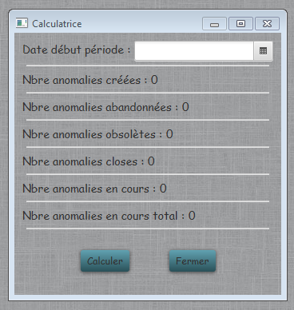

Calculatrice indicateurs
Lance la calculatrice permettant de calculer les indicateurs pour le fichier trimestriel de suivi des anomalies. Les chiffres sont données pour une période de 3 mois débutant à la date enregistrée.

- Calculer : Lance le calcul des indicateurs :
- Nbre d'anomalies créées : Indique le nombre d'anomalies créées sur la période.
- Nbre d'anomalies abandonnées : Indique le nombre d'anomalies créées sur la période, qui ont été abandonnées, suivi avec le nombre comportant un défaut de sécurité.
- Nbre d'anomalies obsolètes : Indique le nombre d'anomalies créées sur la période, qui sont obsolètes, suivi avec le nombre comportant un défaut de sécurité.
- Nbre d'anomalies closes : Indique le nombre d'anomalies créées sur la période, et qui sont closes, suivi avec le nombre comportant un défaut de sécurité.
- Nbre d'anomalies créées : Indique le nombre d'anomalies créées sur la période toujours en cours, suivi avec le nombre comportant un défaut de sécurité.
- Nbre d'anomalies créées : Indique le nombre d'anomalies toujours en cours
- Fermer : Ferme la calculette.